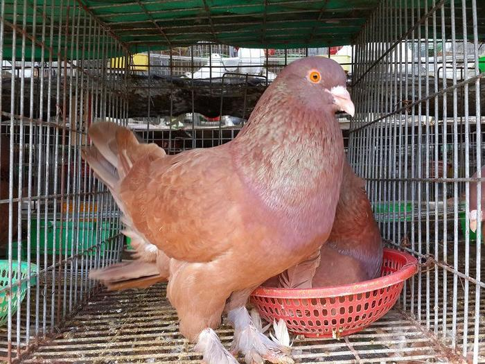

Bồ câu gà hay còn gọi là bồ câu thịt
Có nhiều giống khác nhau về kích thước và màu sắc, được phân chia thành các nhóm như bồ câu đưa thư, bồ câu bay lượn, bồ câu cảnh và bồ câu thịt. Trong đó, có mô hình nuôi chim bồ câu gà, đây là những loại có kích thước lớn so với các loại bồ câu khác.
Trên thị trường có nhiều giống bồ câu có trọng lượng lớn, hiệu quả kinh tế cao như: bồ câu Pháp, bồ câu Nhật, bồ câu Thái, bồ câu Hà Lan, bồ câu Mỹ, trong đó có thể phân chia thành bồ câu kiển (bồ câu Nhật) là những giống bồ câu đẹp, dùng để làm kiểng, làm cảnh.
Giống bồ câu Pháp lớn con (trung bình mỗi con có thể cân nặng 500 - 700 gram). Giống bồ câu gà có nguồn gốc từ Pháp rất dễ nuôi, nhanh lớn, ít bệnh, sinh sản tốt, sau 25 ngày nuôi là xuất bán, lúc đó chim bồ câu có trọng lượng trên 400 gram, cao gấp 2 lần so với giống bồ câu ở địa phương, nếu nuôi có thời gian từ 7-8 tháng, có trọng lượng từ 800g-1 kg/con.
Một số giống bồ câu có thể kể đến là:
Video chăm sóc Bồ Câu